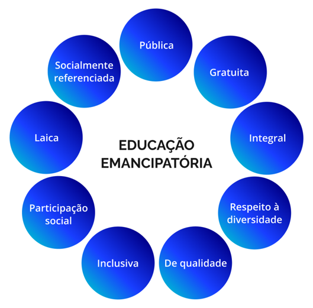

Possibilidades da educação emancipatória
A EPT, confluência entre o trabalho e a educação, herda as contradições desses dois âmbitos, em particular da subalternidade econômica, social e cultural expressa na negação dos direitos, seja pela falta de vagas, seja pela precariedade, que leva à existência e permanência histórica da dualidade educacional, ou seja, de duas redes: uma para as elites e outra para os trabalhadores e seus filhos.
Entretanto, a CF/88, ao reconhecer a educação como direito social, exige uma legislação específica e políticas públicas consonantes para a garantia do acesso, da participação e da aprendizagem a todas as crianças, adolescentes, jovens, adultos e idosos. Então, coerente com a perspectiva emancipatória, pode-se depreender que as políticas educacionais no Brasil devem (ou deveriam) conceber a educação a partir dos seguintes princípios e premissas:
- Pública: oferecida e mantida pelo Estado, acessível a todos os cidadãos, independente de sua condição social, econômica ou cultural. A educação pública deve garantir igualdade de oportunidades por ser um direito inalienável de cada brasileiro e brasileira.
- Gratuita: a gratuidade da educação pública, ou seja, sem cobrança de taxas ou mensalidades para o acesso e a permanência dos estudantes nas escolas e universidades mantidas pelo Estado, é um importante instrumento de redução de desigualdades educacionais. Deste modo, é assegurado o direito à educação para as classes subalternas, que possuem menor poder econômico.
- Integral : busca o desenvolvimento pleno enquanto ser humano, trabalhador e cidadão, em seus aspectos físico, cognitivo, moral, social e cultural. As dimensões de solidariedade, emancipação, liberdade, empatia, criticidade, diálogo e participação social são essenciais nesta proposta de formação humana.
- Laica: independente de qualquer religião ou crença, sem privilégios ou discriminações com base na religiosidade. A laicidade garante, ao mesmo tempo, a liberdade de crença e a separação entre Estado e religião.
- De qualidade socialmente referenciada: contextualizada em relação à realidade local e às necessidades da comunidade/território, sem perder as correlações com os processos sociais mais amplos. A criticidade e o diálogo entre conhecimentos científicos e os conhecimentos e saberes prévios, valores e cultura, bem como as demandas dos educandos, são elementos para uma educação que se referencia nos processos sociais.
- Inclusiva: que acolhe todos os estudantes, sem exceção, respeitando suas diferenças e atendendo às suas necessidades específicas. Combate a discriminação e a segregação, garantindo o acesso e a permanência de pessoas com deficiência, transtornos globais do desenvolvimento e altas habilidades/superdotação.
- Respeito à diversidade: valoriza as múltiplas identidades culturais, étnico-raciais, de gênero, de geração, de orientação sexual, religiosas etc. Tem como objetivo o combate aos preconceitos, a promoção do diálogo intercultural e a formação de cidadãos tolerantes e solidários.
- Participação social: dos profissionais de educação, estudantes, pais e dos sujeitos sociais do território na construção das políticas, programas e projetos. Isso envolve a participação dessas categorias nas etapas de elaboração, execução e acompanhamento das políticas públicas.

Título: Educação emancipatória
Fonte: Prosa (2024f).
A adequação da legislação educacional aos princípios da Constituição Federal de 1988 impõe, deste modo, uma nova Lei de Diretrizes e Bases da Educação Nacional (LDBEN), da qual decorreram outras normativas e a própria organização da educação brasileira.
LDBEN: estrutura, contradições e transformações
A LDBEN – Lei nº 9.394, de 20 de dezembro de 1996 – é uma peça essencial na legislação educacional brasileira. Seu processo de tramitação, bem como suas polêmicas e contradições, reflete a dinâmica e a evolução do sistema educacional no Brasil, fruto das tensões entre diferentes interesses sociais e políticos e das correlações de forças entre os polos hegemônico e contra-hegemônico da sociedade.
A regulação da educação pelo Estado brasileiro iniciou no Império (1822-1889), com a primeira lei acerca desse assunto promulgada em 1827. Mas foi apenas na República (1889 até a atualidade), pela Constituição de 1934, que as diretrizes para a educação foram previstas em lei como responsabilidade da União. Nesse paradigma, a Lei de Diretrizes e Bases (LDB), em sua primeira versão, só foi promulgada em 1961 (governo de João Goulart), portanto em um contexto democrático, e foi caracterizada pela tentativa de descentralizar a estrutura administrativa da educação, conferindo maior autonomia aos sistemas estaduais de ensino dos estados e municípios.
Com a Ditadura Militar (1964-1985), a LDB/61, embora vigente, não tinha efetividade e, assim, foi promulgado uma nova LDB em 1971, que manteve aspectos da anterior, embora com uma orientação muito mais conservadora e centralizadora. Após a redemocratização do Brasil com a Constituição de 1988, cristalizou-se a discussão de um novo marco regulatório para a educação brasileira, culminando na promulgação da LDBEN de 1996.
.png)
.png)
.png)
.png)
.png)
.png)
.png)
.png)
.png)
Título: Linha do tempo da LDBEN
Fonte: Brasil (1988).
Elaboração: Prosa (2024g).
Como já foi visto, os artigos referentes à educação na Constituição de 1988, embora contraditórios, apresentaram avanços significativos (a educação como direito social, a universalização do ensino, a valorização dos profissionais da educação etc.) e diversos outros indicativos que deveriam nortear a nova LDBEN.
Entretanto, os acirrados debates sobre a educação, que tinham acontecido durante a Assembleia Constituinte, continuaram em um novo patamar com o reagrupamento das forças conservadoras. O processo de elaboração dos projetos de lei evidencia as diferenças entre o debate, a participação democrática da sociedade civil e a elaboração de gabinete.
Dois projetos de sociedade e de educação ficaram evidentes: a manutenção da dualidade das redes, sendo a educação pública, de baixa qualidade e voltada para a formação de mão de obra destinada aos filhos dos grupos subalternos, e a educação privada, para a reprodução dos quadros da elite. Decorrem disso as disputas pelos sentidos, objetivos, conteúdos e, também, pelo destino dos recursos públicos para a educação. As principais polêmicas eram (e continuam a ser):
- A autonomia dos sistemas: a LDBEN/96 retoma boa parte da autonomia de estados e municípios da LDB/61. Contudo, continuam as discussões sobre os limites desta autonomia (por exemplo, quanto à oferta de níveis, modalidades, seus currículos, a necessidade de garantir a equidade, o padrão de qualidade e o financiamento necessário para a execução das políticas educacionais). Também continua inconcluso o debate sobre o regime de colaboração entre União, estados e municípios.
- Educação pública e os limites da educação privada: o intenso e permanente debate sobre o papel do setor privado na educação e o financiamento de instituições privadas com recursos públicos. Debate que envolve tanto a forma direta de privatização (gestão administrativa e pedagógica de unidades escolares públicas) quanto a forma indireta, como a gestão administrativa de equipamentos públicos, a compra de vagas em unidades privadas, a oferta privada de componentes curriculares, a terceirização de docentes e funcionários, a adoção de material didático, consultorias de entidades empresariais, entre outras.
- Qualidade da educação: a LDBEN preconiza a educação de qualidade para todos e o debate se dá em torno do significado dessa qualidade, se socialmente referenciada ou se baseada em padrões gerais, aferidos por métodos de avaliação em massa. A permanência das desigualdades educacionais, com milhões de pessoas tendo seus direitos à educação negados, reflete as desigualdades regionais e as disparidades sociais e econômicas no país.
- Mudanças curriculares e inclusão de temas da pauta identitária e social: a inclusão de temas como as relações étnico-raciais e de gênero, educação sexual, diversidade cultural e direitos humanos e, ainda, a presença/ausência de determinados componentes/disciplinas no currículo escolar refletem as tensões sociais e políticas em torno dos objetivos da educação.
- Valorização do magistério: a LDBEN estabeleceu a formação mínima para o exercício docente (licenciatura) e o piso salarial nacional para a educação pública. Entretanto, sob o aparente consenso em relação à valorização dos profissionais da educação e os avanços em algumas áreas, permanecem os baixos salários, as condições de trabalho precárias, a ausência ou a oferta insuficiente de formação inicial e continuada e a discrepância da formação em relação à disciplina ministrada. Tais questões têm impacto direto na qualidade da educação.
- Financiamento da educação: a LDBEN estabelece diretrizes para o financiamento da educação, mas essas diretrizes são objeto de intensa disputa em relação ao volume de recursos a serem investidos, à distribuição desses recursos entre os níveis e etapas da educação e entre os entes federados (estados e municípios) e, também, à fiscalização do uso destes recursos públicos para seu fim precípuo: a escola pública.
Desde sua promulgação, a LDBEN passou por muitas atualizações e emendas em apenas cinco anos, todavia, entre 1997 e 2024, não ocorreram modificações. É a lei mais alterada da história da República, só perdendo para a própria Constituição, o que demonstra a importância dada à educação pelos grupos sociais, tanto a elite quanto os subalternos e a oposição.
Tais mudanças devem ser analisadas como derivadas das lutas sociais que se refletem no campo educacional e apresentam avanços e recuos, expressando a conjuntura e respectiva correlação de forças. Outras normativas (leis e decretos) não alteram a , mas detalham, especificam ou regulamentam artigos que abordam temas complexos, quase sempre polêmicos, como o financiamento.
Ainda assim, ainda que represente posições intermediárias e contraditórias, a essência da concepção de educação presente na LDBEN/96 – pública, gratuita, laica, de qualidade e, principalmente, que parte da compreensão de educação como direito social de todos e todas, que não prescreve com a idade – resiste e a LDBEN continua como um dos marcos mais importante na história da educação brasileira.